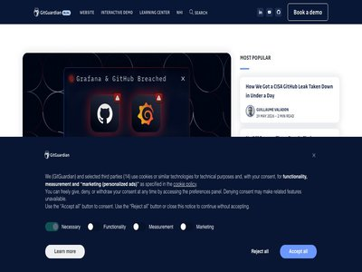
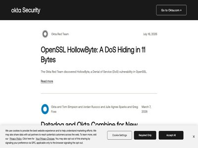

November 16, 2026 · 21 articles

Unpatched GeoVision camera software gave cryptojackers a side door into 13 organizations
November 16, 2026
Attackers used GeoVision camera management software to break into Windows machines at 13 organizations and turn them into cryptocurrency miners, Huntress warned in a threat advi... (Help Net Security)

New NoisyTCP vulnerability lets attackers crash Linux servers
November 16, 2026
An 11-year-old Linux kernel vulnerability, dubbed NoisyTCP, affects almost all Linux distributions and lets attackers crash systems running Nginx, Apache, and SSH servers with d... (BleepingComputer)
Rspamd 4.3.0 stops forwarded mail from softening DMARC rejects
November 16, 2026
Rspamd 4.3.0 fixes bugs that let an unauthenticated attacker crash the spam filter’s workers or slip forged authentication results through it. The worst crash took one HTTP requ... (Help Net Security)

German Military Grounds Quantum Systems Drones Following Reported Cyberattack
November 16, 2026
German drone maker Quantum Systems confirms a cyberattack that disrupted operations, with reports pointing to a malicious software update. Quantum Systems, a German defense comp... (Security Affairs)

AI Cuts Vulnerability Discovery from Nine Months to 90 Hours
November 16, 2026
Forescout report claims to have found 66 new flaws in just 90 hours using AI (Infosecurity Magazine)

Tor Updates DoS Defenses Again as Relay Attacks Continue
November 16, 2026
Tor 0.4.9.17 patches several security issues, including one related to how built-in DoS protections deal with IPv6. The post Tor Updates DoS Defenses Again as Relay Attacks Cont... (SecurityWeek)
Microsoft pushes Windows emergency updates to fix activation failures
November 16, 2026
Microsoft has released emergency out-of-band updates to fix Windows activation and licensing failures caused by this month's security updates. [...] (BleepingComputer)

The Hidden Cost of Identity Technical Debt
November 16, 2026
Key Takeaways Identity technical debt is the accumulated security, governance, and operational burden created by unmanaged identities, excessive permissions, outdated access, an... (Qualys Blog)
Microsoft Rules Out Cyberattack in Outage, Warns of Phishing Campaign
November 16, 2026
Phishing emails posing as Microsoft 365 service notices referenced the real outage incident and threatened to delete held messages. The post Microsoft Rules Out Cyberattack in O... (SecurityWeek)
SilentAir and LIMINAL PANDA Target Telecom Networks to Spy on Subscribers
November 16, 2026
Researchers uncover two threat groups, SilentAir and LIMINAL PANDA, exploiting mobile networks to spy on users and intercept calls and text messages. Telecom security firm Enea... (Security Affairs)

How ISVs are unlocking European workloads using Google Cloud Dedicated technology
November 16, 2026
Across Europe, organizations handling sensitive workloads in regulated sectors - such as financial services, healthcare, critical infrastructure, and the public sector - are try... (Google Cloud Blog)

A week in security (November 9 - November 15)
November 16, 2026
A list of topics we covered in the week of November 9 to November 15 of 2026 (Malwarebytes Labs)

Amazon Uncovers AI Agent Campaign Targeting LiteLLM, Dify, and Other Apps for API Keys
November 16, 2026
Attackers' AI agents have been hunting for weak spots in internet-exposed AI apps such as LiteLLM, One API, and Dify to steal the AI provider keys stored inside, according to th... (The Hacker News)
You can now self-host Kitesurf, Cloudflare’s open-source browser for AI agents
November 16, 2026
Kitesurf is Cloudflare’s browser for AI agents, built to load web pages and run their JavaScript on Cloudflare Workers without starting up a full desktop browser. Cloudflare has... (Help Net Security)
BO Team Exploits Log4Shell in VMware vCenter, Compromises Russian Firm's Code-Signing Server
November 16, 2026
An investigation into suspicious activity within a Russian software developer's network has uncovered a months-long compromise of its development infrastructure and a software c... (The Hacker News)
Google Project Zero will disclose bugs after 90 days, fixed or not
November 16, 2026
Google’s Project Zero will disclose the vulnerabilities it finds 90 days after reporting them to a vendor, whether or not the vendor has shipped a fix. The deadline drops to 60... (Help Net Security)
Ory Hydra: Open-source OAuth 2.0 server and OpenID Connect provider
November 16, 2026
Ory Hydra is an open-source OAuth 2.0 server and OpenID Connect provider. Ory built it to issue and validate tokens, register client applications, and manage the keys that sign... (Help Net Security)
ARTEX Moves at Machine Speed: What Risk Owners Need to Change
November 16, 2026
Key Takeaways ARTEX, an AI-driven penetration-testing framework released in July 2026, doesn’t exploit new kinds of vulnerabilities. It automates the discovery, chaining, and re... (Qualys Blog)
Product showcase: ESET Mobile Security brings phishing protection and security checks to iOS
November 16, 2026
ESET Mobile Security for iOS helps iPhone users identify suspicious links, review device security settings, and assess Wi-Fi connections. ESET Mobile Security is available for i... (Help Net Security)
AI uncovers flaws in discontinued devices with no vendor left to patch them
November 16, 2026
Forescout researchers built a tool to test if generally available AI models could find security flaws on a limited budget. They examined both open-source code and compiled softw... (Help Net Security)

Risky Bulletin: Hackers accessed Barracuda's cloud
November 16, 2026
In other news: Germany grounds drones after cyberattack on vendor; US AI task force asks for regulatory leniency; FBI disrupts North Korean face-swapping tech. (Risky Business News)
November 15, 2026 · 17 articles

CVE-2026-109518: apt Flaw Lets Attackers Swap Packages After Verification and Run Code as Root
November 15, 2026
Understand CVE-2026-109518, patch vulnerable APT clients, and use Harden-Runner to find HTTP package downloads and investigate CI/CD activity. (StepSecurity Blog)
StepSecurity Now Inventories AI Agent Plugins in Your GitHub Repositories and on Developer Machines
November 15, 2026
Inventory the Claude Code and Codex plugins on developer machines and in your GitHub repositories: where each came from, what it bundles, whether it is enabled, and which reposi... (StepSecurity Blog)
Security Affairs newsletter Round 604 by Pierluigi Paganini - INTERNATIONAL EDITION
November 15, 2026
A new round of the weekly Security Affairs newsletter has arrived! Every week, the best security articles from Security Affairs are free in your email box. Enjoy a new round of... (Security Affairs)
Week in review: Secret stealer hits GitHub repos, Claude Code turned into remote-controlled implant
November 15, 2026
Here’s an overview of some of last week’s most interesting news, articles, interviews and videos: What a security leader should tell the CEO about leaked credentials In this Hel... (Help Net Security)
The Microsoft Outage Left 15 Hotel Guests Poisoned by Chlorine
November 15, 2026
A Microsoft 365 outage stopped a hotel’s email chlorine alert in Germany, and 15 guests were poisoned. A hotel in Germany had a maintenance safety system for its sauna area. If... (Security Affairs)
GitHub Package Firewall vs. StepSecurity Secure Registry: Protection beyond npm
November 15, 2026
GitHub’s package firewall covers npm only. StepSecurity's Secure Registry protects 8 ecosystems, traces every install, and blocks malicious packages within an hour (StepSecurity Blog)
Railway’s Security Incident: Why CI/CD Needs Runtime Security
November 15, 2026
Lessons from Railway’s November 10 report: review build access, tighten OIDC trust, and use Harden-Runner to observe and restrict CI/CD runtime activity. (StepSecurity Blog)
CVE-2026-123158 (*sshole): OpenSSH Password Authentication Bypass on Alpine Linux
November 15, 2026
CVE-2026-123158 (*sshole) enables an OpenSSH authentication bypass on Alpine Linux. Review lab results, exposure conditions, fixes, and mitigations. (StepSecurity Blog)
Binance’s $6.34 Billion Hack: Developer Machines, AI Tooling, and Wallet Signing
November 15, 2026
Binance’s November 3 findings reveal a path from a malicious coding assignment to wallet signing. Explore developer-machine controls and response guidance. (StepSecurity Blog)
OVHcloud CLI Compromised via GitHub Release Swap: Detonating the Real GlassWorm Loader and What We Found
November 15, 2026
An attacker swapped the binaries on five OVHcloud CLI releases, stayed live for 94 minutes, and deleted the evidence. We rebuilt the exact attacker build, recovered the GlassWor... (StepSecurity Blog)
FBI warns ARTEX AI hacking tool is powering global cyberattacks
November 15, 2026
The FBI is warning that hackers are using an AI-powered penetration testing framework called ARTEX to automate cyberattacks against organizations worldwide, including a recent C... (BleepingComputer)

YARA-X 1.23.0 Release, (Sun, Nov 15th)
November 15, 2026
YARA-X&#;x26;#;39;s 1.23.0 release brings 4 improvements and 16 bugfixes. (SANS ISC)
TSMC employee data breach linked to cloud provider
November 15, 2026
Taiwan Semiconductor Manufacturing Company (TSMC) confirmed that personal employee data has been leaked online after a threat actor put 6.9GB of information allegedly stolen fro... (BleepingComputer)
Pentagon Renames CDAO ‘Super Intelligence Office’
November 15, 2026
The move follows President Trump’s order to replace “artificial intelligence” with “super intelligence” in executive branch communications. The post Pentagon Renames CDAO ‘Super... (SecurityWeek)
Italy Fines Meta €805 Million Over Facebook's Android Gallery Access Without Explicit Consent
November 15, 2026
Meta was fined €805 million in Italy yesterday over a Facebook for Android feature that suggests photos and videos from users' phone galleries for them to post. The Garante, Ita... (The Hacker News)
Data Breach at La Poste Subsidiary Maileva Affects 22 Million People in France
November 15, 2026
A cyberattack on La Poste subsidiary Maileva exposed the names and postal addresses of 22 million people, including patients and tenants. Maileva, a subsidiary of the La Poste g... (Security Affairs)
Cursor Says Stolen Fireworks AI Key Led to Trojanized Claude Code Extension Incident
November 15, 2026
The compromise of Anthropic's official Claude Code extension on Cursor's extension marketplace was the result of the theft of an access key that was exposed in the wake of a bre... (The Hacker News)
November 14, 2026 · 9 articles
Attackers Exploit UnrealIRCd Flaw That Enables Server-Level Command Injection
November 14, 2026
The U.S. Cybersecurity and Infrastructure Security Agency (CISA) on Friday added a high-severity security flaw impacting UnrealIRCd, an open-source Internet Relay Chat (IRC) ser... (The Hacker News)

Upcoming Speaking Engagements
November 14, 2026
This is a current list of where and when I am scheduled to speak: I’m speaking at the Catalyst Summit in Brampton, Ontario, Canada, on Wednesday, November 18, 2026. I’m speaking... (Schneier on Security)
US disrupts North Korean campaign behind $400 million crypto theft
November 14, 2026
The U.S. government has disrupted a North Korean social engineering campaign called 'FaceStealer', responsible for stealing more than $400 million in cryptocurrency. [...] (BleepingComputer)
Is AI Making Us Worse at Cybersecurity?
November 14, 2026
Overreliance on AI could erode the creativity, clear communication, and critical thinking security teams need when there’s no playbook. The post Is AI Making Us Worse at Cyberse... (SecurityWeek)
Apple Reveals How Secure Exclaves Shield Camera and Microphone Data
November 14, 2026
The tech giant has detailed the architecture designed to isolate ambient sensor data from the main OS on HomeView and new iPhones. The post Apple Reveals How Secure Exclaves Shi... (SecurityWeek)

Fake GTA VI 'Free PC Version' Download Delivers 796 KB Infostealer Ahead of November 19 Launch
November 14, 2026
A fake GTA VI PC download campaign leads users from Google Colab to a fraudulent e-commerce site. The 796 KB executable is WARDEN Stealer, an infostealer targeting Steam account... (Joho no Todai)
No Signs of Hacking in FAA Ground Stop as FBI Reportedly Probes Software Update
November 14, 2026
Officials say there is no evidence of a cyberattack behind the nationwide FAA outage, which may have been caused by a software update. The post No Signs of Hacking in FAA Ground... (SecurityWeek)
AI-Powered Penetration Testing Traffic Surges More Than 30x, Cloudflare Says, as Stolen Tokens Enable Internal Breaches
November 14, 2026
Cloudflare reported that traffic from AI penetration-testing tools has grown more than 30-fold since October 1. More than 12,000 ARTEX-related repositories now exist, and real-w... (Joho no Todai)
November Windows Update Breaks Printing: Invisible Images Used for Watermarks and Layout Trigger Failures
November 14, 2026
A bug has been confirmed in which invisible images in documents cause printing to fail on systems with the November Windows security update. Even when users did not insert an im... (Joho no Todai)
November 13, 2026 · 47 articles
Check Point gateways hacked via PHP2Shell to deploy VMware ESXi wiper
November 13, 2026
Vulnerable Check Point Security Gateway instances have been targeted in PHP2Shell attacks that deployed data-wiping malware on VMware ESXi hosts. [...] (BleepingComputer)
Check Point warns of zero-day flaw exploited for root access
November 13, 2026
Check Point Software has released emergency hotfixes to address a high-severity flaw that hackers have been exploiting to gain root privileges and establish persistence on vulne... (BleepingComputer)
Operation Endgame Takes Down Gootloader, CastleRAT and StealC Servers, Seizes 6.4M Stolen Logins
November 13, 2026
An international police operation took down servers behind Gootloader, CastleRAT and StealC this week. Criminals used the three malware tools to gain access to computers, steal... (The Hacker News)
Apify Confirms Customer Data Accessed in Cyberattack
November 13, 2026
The web scraping company says an intruder accessed customer accounts and obtained personal information or stored data. The post Apify Confirms Customer Data Accessed in Cyberatt... (SecurityWeek)
Friday Squid Blogging: Pacific Flying Squid Populations Dropping in Korean Waters
November 13, 2026
Climate change is the issue . As usual, you can also use this squid post to talk about the security stories in the news that I haven’t covered. Blog moderation policy. (Schneier on Security)

SCKit abuses ScreenConnect to deploy remote access and target technician sessions
November 13, 2026
SCKit abuses ScreenConnect to deploy unauthorized remote access and target technicians. Explore the attack chain, mitigations, and Microsoft Defender XDR hunting. The post SCKit... (Microsoft Security Blog)
Researchers continue to find serious vulnerabilities in internet connected refrigerators
November 13, 2026
VulnCheck disclosed 14 vulnerabilities in Dixell refrigeration units that give an attacker root access, while online honeypots are being flooded with hacks and malicious probes.... (CyberScoop)

ARTEX and beyond: AI-enabled penetration testing platforms
November 13, 2026
AI-enabled penetration testing and red team frameworks can automate and chain reconnaissance, vulnerability testing, and follow-on actions, lowering the skill threshold for atta... (Cisco Talos)

This year’s bug count just passed 100K
November 13, 2026
‘We don’t have a security problem anymore. We have a data problem now’ (The Register - Security)

ArcticRAT Cybercrime Gang Profiles Victim Finances With AI
November 13, 2026
The Android malware has expanded from focusing on crypto theft to full device control, and the attackers have added advanced analysis of stolen information. (Dark Reading)

Adapting to AI penetration testing orchestrators: The Modern Security Model
November 13, 2026
AI-orchestrated penetration testing platforms like ARTEX have become increasingly powerful tools enabling effective attacks on exposed infrastructure. Here we share Cloudflare’s... (Cloudflare Blog)

The Green Agent POV: Formulating the Fix for an Exposed Container with Sensitive Data Access
November 13, 2026
See how the Green Agent balanced security urgency with business continuity to turn a toxic combination into an executable remediation plan and ready-to-merge pull requests. (Wiz Blog)
PostgreSQL Patches 52 Flaws, Including 22-Year-Old Bug Enabling Authenticated RCE
November 13, 2026
A type confusion flaw in PostgreSQL lets a database user who can create objects run code on the server. Updates released yesterday fix it, along with 51 other security flaws. Fu... (The Hacker News)
ChatGPT Wallet lets agents pay without seeing your card number
November 13, 2026
OpenAI began rolling out ChatGPT Wallet, which lets ChatGPT agents pay for purchases with a stand-in card number, so the user’s card details are not shared with the agent or the... (Help Net Security)

Inside the loop: Five AI attack frameworks that never ask permission
November 13, 2026
Five agentic offensive frameworks act in bursts of two to 25 seconds, and none enforces authorization in code. What ARTEX, CyberStrikeAI, Cairn, PentAGI, and HexStrike leave in... (Elastic Security Labs)

A Valid Signature Isn’t Enough: Attributing and Validating Leaked JWTs
November 13, 2026
During a six-month internship with the GitGuardian security research team, Florent Leroy built the attribution rules and live checkers described in this post. Since Aug. 5, they... (GitGuardian Blog)
56 AWS API calls in 141 milliseconds: Inside an AI-run intrusion
November 13, 2026
A CyberStrikeAI server spent 16 days in four AWS accounts using eight identities, and the CloudTrail record shows why six detection rules each caught only part of it. (Elastic Security Labs)
New Mior and Skyfall Attacks Let Rogue Cloud Hosts Steal Secrets From AMD SEV-SNP VMs
November 13, 2026
Two attacks made public this week allow a malicious host to read data inside AMD SEV-SNP-protected virtual machines (VMs), which are built to keep the server's operator out. One... (The Hacker News)
November Patch Tuesday: How to Sort Through the Patches
November 13, 2026
Key Takeaways At 1,252 CVEs this month, “patch everything now” isn’t a plan; teams need to decide what to patch first, what to test, and what to mitigate. Know your exposure ear... (Qualys Blog)
ARTEX: Attackers Adopted This AI Pentesting Tool in Three Months. Leaked Secrets Are Its Fastest Way In.
November 13, 2026
ARTEX is an open-source tool where AI agents run a penetration test on their own. Since August 2026, state-aligned groups, criminal crews and one runaway research agent have poi... (StepSecurity Blog)
In Other News: New CISA Director Nominee, Connected Car Hacking, Baker Tilly Data Breach
November 13, 2026
Noteworthy stories that might have slipped under the radar: Siemens details security advisory policy, OpenAI Codex backdoor risk, Microsoft warns of model weight backdoors. The... (SecurityWeek)
How one AI agent exposed five critical enterprise security gaps
November 13, 2026
An AI agent built to automate invoice processing could be manipulated into changing vendor bank details through a malicious email, without triggering traditional security alerts... (BleepingComputer)
Fake GTA 6 download goes after Steam logins and crypto wallet data
November 13, 2026
Cynet researchers followed a “GTA 6 EXE file download” link from a Google Colab notebook to a ZIP archive and found a WARDEN Stealer loader inside. The malware takes saved passw... (Help Net Security)
Introducing Spend Management: Spending limits and alerts for Cloudflare
November 13, 2026
Spend Management adds opt-in spending caps for Cloudflare Workers and Durable Objects, and more products soon. Here is how we built the metering pipeline that turns usage into r... (Cloudflare Blog)
Microsoft Struggles to Restore Email and Other Services in a Global Outage
November 13, 2026
Microsoft is trying different ways to identify the cause of the problem and get its servers back online, using “a measured approach to identify and repair affected infrastructur... (SecurityWeek)
Hackers' Overreliance on AI Can Result in Weaker Cyber-Attacks, Proofpoint Researcher Says
November 13, 2026
Proofpoint’s Selena Larson notes that threat actors’ reliance on AI has led to lots of mistakes being made, with little evidence of increased sophistication (Infosecurity Magazine)
Microsoft 365 Outage Set to Ramp up Security Risks to Organizations
November 13, 2026
While Microsoft resolves the global M365 and Outlook outage, cybersecurity teams remain on high alert as cybercriminals prepare to exploit the chaos (Infosecurity Magazine)
AI Doesn’t Have to Go Rogue to Break the World
November 13, 2026
This essay is adapted from a keynote speech delivered at the DEF CON 34 conference in Las Vegas on August 7, 2026. The essay originally appeared in CyberScoop . I want to talk a... (Schneier on Security)
When an AI Agent Goes Wrong, Can You Stop It?
November 13, 2026
Suppose an AI agent is asked to sort support tickets and look up account details. A ticket contains instructions that lead the agent to export records to an unfamiliar destinati... (The Hacker News)
Google pushes second Chrome update this week
November 13, 2026
Google has pushed out a second Chrome update this week, fixing security flaws that could allow attackers to run malicious code. (Malwarebytes Labs)
Phishing Rises Three Times Faster in Europe Than Globally, Proofpoint Finds
November 13, 2026
New Proofpoint research reveals phishing detections surged 4.5x across Europe year over year, compared with 1.5x globally (Infosecurity Magazine)
354 dark web vendors and buyers arrested in Operation TorNado
November 13, 2026
Europol and police in 14 countries arrested 354 dark web vendors and buyers in Operation TorNado, which ran from May 2025 to October 2026. Investigators went after people who ha... (Help Net Security)

GTA VI isn’t out yet - and the scams are already in full swing
November 13, 2026
Cybercriminals attempt to cash in on the hype around the game, luring fans with malware-laced downloads and ‘early access’ that doesn’t exist (ESET WeLiveSecurity)
Citrix Patches 10 Critical NetScaler Vulnerabilities
November 13, 2026
Successful exploitation could lead to unexpected behavior or denial-of-service (DoS) conditions. The post Citrix Patches 10 Critical NetScaler Vulnerabilities appeared first on... (SecurityWeek)
OpenAI’s Daybreak brings AI agents to security testing and vulnerability fixes
November 13, 2026
OpenAI is bringing AI agents into more of the software security process with Daybreak, pairing web application penetration testing with tools that investigate vulnerabilities an... (Help Net Security)
AI Set to Revolutionize Ransomware Following “Stagnant” Few Years
November 13, 2026
TrendAI’s Bob McArdle said ransomware techniques will change significantly in the next year, with AI making attacks more dangerous and profitable (Infosecurity Magazine)

Policy and Disclosure: 2026 Edition
November 13, 2026
Since 2021, Project Zero has followed a “90 + 30” vulnerability disclosure policy, allowing vendors up to 90 days to remediate a vulnerability plus an extra 30 days “soak time”... (Project Zero)

Inside Falcon AI Gateway: One Control Point for AI Traffic
November 13, 2026
(CrowdStrike Blog)
Hackers Exploit N-central Flaws to Infect 21 Servers, Including 19 Running Hotfix 2
November 13, 2026
N-able on Thursday said it's taking additional precautions in the wake of public disclosure of a new set of flaws tracked as 4EverAble2Shell and Agent2Shell. "We are restricting... (The Hacker News)

Apache HTTP/2 RCE
November 13, 2026
What is the Vulnerability? CVE-2026-119618 is a race condition (CWE-362) in Apache HTTP Server's mod_http2 module. In assign_headers(), the module writes to a header table that... (FortiGuard Labs)
Macfinger ClickFix campaign sends DownTheDRAIN infostealer for macOS, (Fri, Nov 13th)
November 13, 2026
Introduction (SANS ISC)
AI Didn’t Create a New Kind of Risk. It Removed the Time You Had to Fix the Old One.
November 13, 2026
Mandiant’s AI Risk and Resilience 2026 report shows attackers putting agentic AI to work across the intrusion. Vulnerability exploitation is still the leading way in, and the wi... (Qualys Blog)

Introducing Project Theseus, starting with challoc
November 13, 2026
Chainguard launches Project Theseus to move beyond reactive patching with safer open source components, starting with the Rust-based challoc allocator. (Chainguard Unchained)
Help! I need somebody! --help, not just anybody! Every tool that never had a manual page
November 13, 2026
AI coding agents need accurate CLI documentation. See how Chainguard makes command-line help searchable, version-specific, and accessible through MCP. (Chainguard Unchained)
Run GitLab-certified hardened images for GitLab Enterprise Edition with the security of Chainguard
November 13, 2026
Secure GitLab Enterprise Edition with Chainguard's certified hardened container images, featuring minimal CVEs, signed SBOMs, and FIPS-ready options. (Chainguard Unchained)

Linux Kernel TCP Flaw (CVE-2026-98432)
November 13, 2026
What happened? On October 25, 2026, the National Vulnerability Database published CVE-2026-98432, a vulnerability in the Linux kernel's IPv4 TCP stack. The flaw is a use-after-f... (Okta Security Blog)
Apache HTTP Server's HTTP/2 Vulnerability (CVE-2026-119618)
November 13, 2026
What happened? On November 11, 2026, the Apache HTTP Server project released version 2.4.71 to fix a critical remote code execution vulnerability in its HTTP/2 module, mod_http2... (Okta Security Blog)
November 12, 2026 · 26 articles
New worm-like 'SCKit' malware targets MSPs in ScreenConnect attacks
November 12, 2026
A new worm-like malware toolkit named SCKit was deployed in the recent ScreenConnect attacks targeting managed service providers (MSPs), designed to spread from infected custome... (BleepingComputer)
ThreatsDay: 59 Linux Kernel Bugs, Falcon Spyware, GSocket Backdoors + 17 More Stories
November 12, 2026
A search result isn't always safe. An access request isn't always harmless. And a familiar account doesn't always mean a familiar person is using it. Simple things to remember.... (The Hacker News)
New SignDrop Zero-Day Exploit Turns Windows CLFS Security Feature Into SYSTEM Access
November 12, 2026
Public exploit code released earlier this week claims that a local Windows user can gain SYSTEM privileges through the Common Log File System driver. The proof of concept, calle... (The Hacker News)

Crafty Microsoft Teams Booking Flow Disguises Device Code Phishing
November 12, 2026
Threat actors used a convincing Microsoft Teams meeting-booking lure to conceal device code phishing and trick victims into authorizing attacker access. (Huntress Blog)
NCSC Launches Cyber Adversary Testing to Boost Resilience
November 12, 2026
The UK’s National Cyber Security Centre has launched a new Cyber Adversary Simulation (CyAS) scheme (Infosecurity Magazine)
PHP2Shell and Node2Shell: Find, Fix, and Verify Across Your Web Apps and APIs
November 12, 2026
Key Takeaways Neither flaw is in your application code. Every app and API on a vulnerable runtime inherits the risk. PHP2Shell (CVE-2026-109618, CVE-2026-109619) is fixed in PHP... (Qualys Blog)
Maersk Reveals Data Breach as Extortion Group Demands $5m
November 12, 2026
Maersk has revealed a threat actor extracted data from one of its legacy systems (Infosecurity Magazine)
CrowdStrike Named a Leader in the 2026 IDC MarketScape for Worldwide Augmented Identity Security Solutions
November 12, 2026
(CrowdStrike Blog)
Chinese AI Project Scouts Spies in Taiwan Chip Industry
November 12, 2026
The CCP built a Big Data system to scrape reams of information and learn about individuals abroad, to potentially target and exploit them. Think Alice Huang Lite. (Dark Reading)
New N-able "4EverAble2Shell" zero-day exploited hours after PoC released
November 12, 2026
Hackers are actively exploiting a newly disclosed N-able N-central zero-day vulnerability dubbed "4EverAble2Shell" to compromise servers and deploy cryptocurrency miners, with r... (BleepingComputer)

CVE-2026-126793 - Privilege escalation in Aurora PostgreSQL dialect detection in AWS Advanced Go Wrapper
November 12, 2026
Bulletin ID: 2026-182-AWS Publication Date: 11/12/2026 13:00 PM PST Description: An untrusted search path issue in Aurora PostgreSQL dialect detection in the AWS Advanced Go Wra... (AWS Security Bulletins)
OpenAI launches security products, tells orgs they’re doomed if they don’t use them
November 12, 2026
Meanwhile, a group of nonprofits sue AI giants and cite AI-driven cyberattacks (The Register - Security)
Microsoft Cloud Outage Hits Outlook, Teams, Copilot and AI Services
November 12, 2026
A Microsoft outage disrupted Outlook, Teams and Copilot, also breaking OpenAI and Anthropic connectors to Microsoft 365 accounts. Microsoft 365, Outlook and Teams went down for... (Security Affairs)
Extortion Group Luna Moth Flits Into Law Firms a Second Time
November 12, 2026
The cybercriminals are retargeting law firms that refused to pay its first ransom, with a social engineering con aimed at stealing Microsoft access tokens. (Dark Reading)
ASPM in the AI Era Part 3: Fixing Risk at the Speed of Code
November 12, 2026
Accelerate MTTR and eliminate remediation bottlenecks with simplified ownership mapping, code fixes, and automated workflows (Wiz Blog)

The Token Cost of Shell Commands
November 12, 2026
You asked your AI coding agent to debug a simple test failure, and it somehow ended up recursively reading your entire .git/objects history. If your API bills are climbing while... (JFrog Security Research)
Powering agentic cloud governance: What's new in Organization Policy
November 12, 2026
Even as sophisticated, new zero-day exploits continue to emerge, most cybersecurity incidents still start from the same common sources: an attacker locating and exploiting a fun... (Google Cloud Blog)
Autonomous defense at cloud speed with SentinelOne and Google Security Operations
November 12, 2026
Modern security operations centers (SOCs) face an ongoing pipeline dilemma. While ingesting comprehensive endpoint telemetry is non-negotiable for defense, conventional delivery... (Google Cloud Blog)
International operation dismantles malware networks, exposes 6.4 million stolen credentials
November 12, 2026
The Operation Endgame action dismantled the loaders, remote access trojans and infostealers that give ransomware gangs their way into corporate networks. The post International... (CyberScoop)
Coding Agent Security for AppSec Leaders: Start With What Agents Can Reach
November 12, 2026
AI coding agents can read files, call tools, and use credentials that never appear in a pull request. For AppSec teams, securing the code is only part of the job. (GitGuardian Blog)

Attackers Use Autonomous AI to Target Semiconductor, Defense and Civil Society Sectors
November 12, 2026
Our analysis of how attackers used the open-source Cairn AI agent framework to autonomously breach semiconductor, defense and civic targets. The post Attackers Use Autonomous AI... (Palo Alto Networks Unit 42)
Predator, Pegasus and Graphite: Governments Accused of Spyware Abuse Face Little Accountability
November 12, 2026
Europe’s spyware victims face years of legal battles and few answers as governments shield surveillance behind national security. Greek journalist Thanasis Koukakis waited almos... (Security Affairs)

LABScon26 Replay | Let’s Get Physical: Why Cybersecurity Needs Hardware-Based Security to Survive AI
November 12, 2026
Adyen’s Dino Dai Zovi shows how hardware security proven in payments can contain AI-driven attacks, even when vulnerabilities cannot be patched. (SentinelLabs)

Securing Frontier AI: ReversingLabs Is Part of Anthropic’s Expanded Cyber Verification Program
November 12, 2026
As an early participant in Anthropic's Cyber Verification Program, ReversingLabs is helping advance a new approach to AI-powered cyber defense-combining frontier AI capabilities... (ReversingLabs Blog)
Lego Takes BrickLink Marketplace Offline After Detecting Unusual Activity
November 12, 2026
Lego has taken its BrickLink Marketplace offline after detecting unusual activity as the company investigates the incident (Infosecurity Magazine)
Chrome, Firefox Updates Patch Over 180 Vulnerabilities
November 12, 2026
Google fixed 83 flaws with a new Chrome 157 release, and Mozilla addressed 99 bugs in Firefox 160. The post Chrome, Firefox Updates Patch Over 180 Vulnerabilities appeared first... (SecurityWeek)